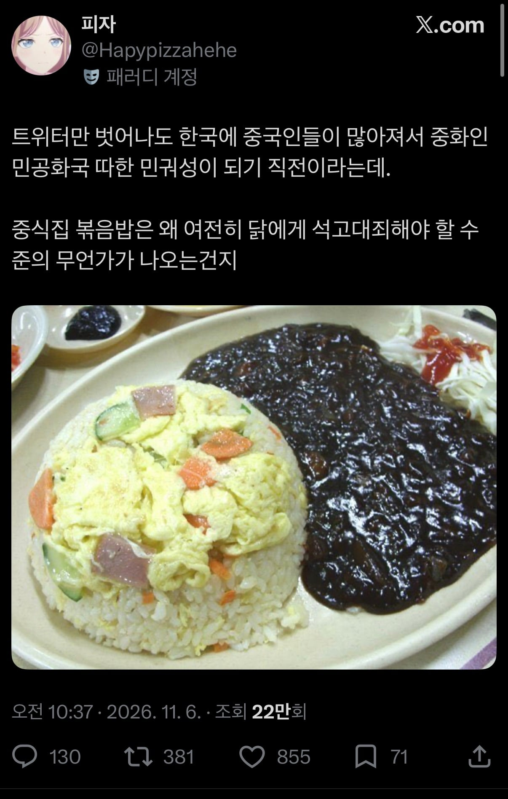
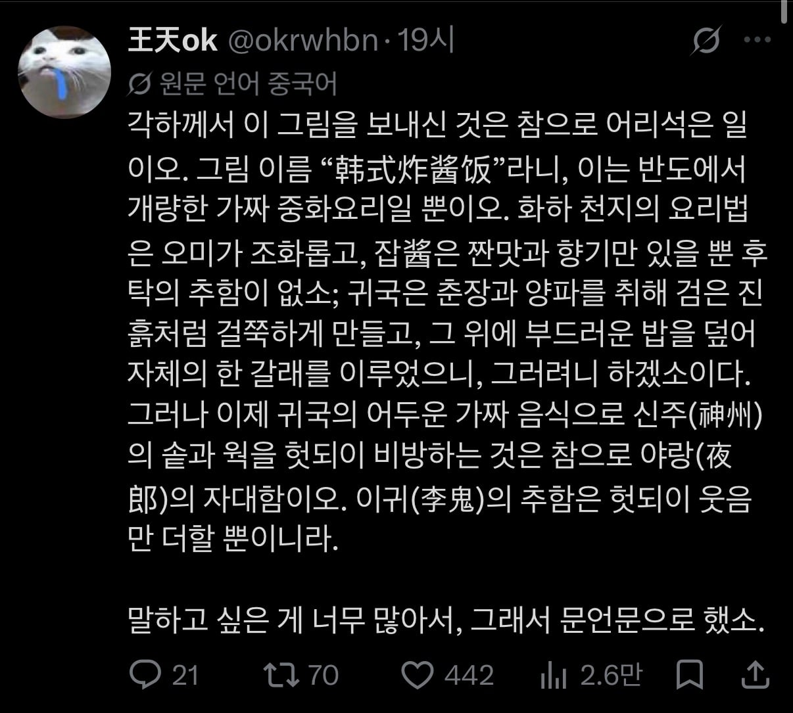
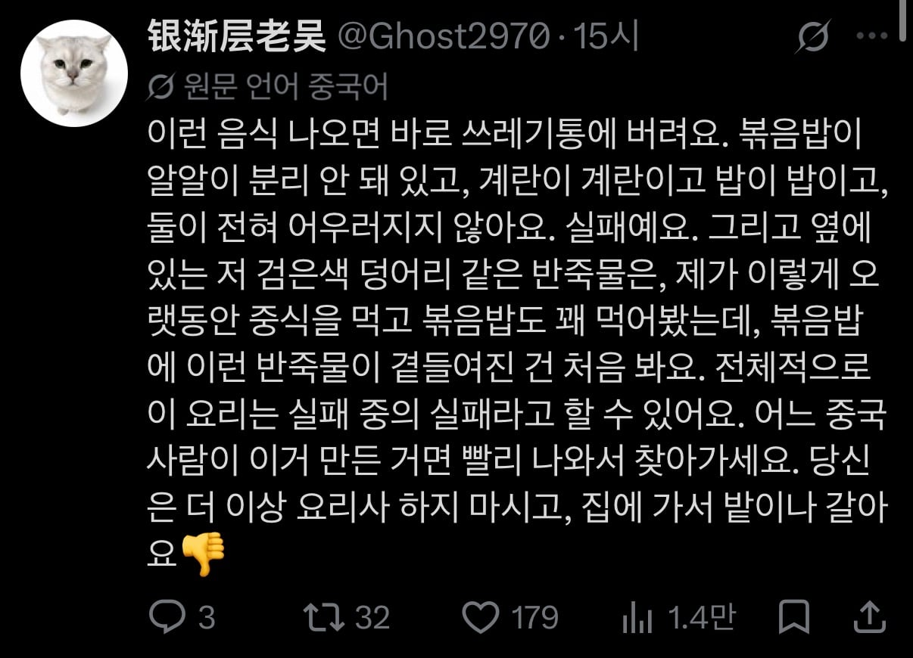
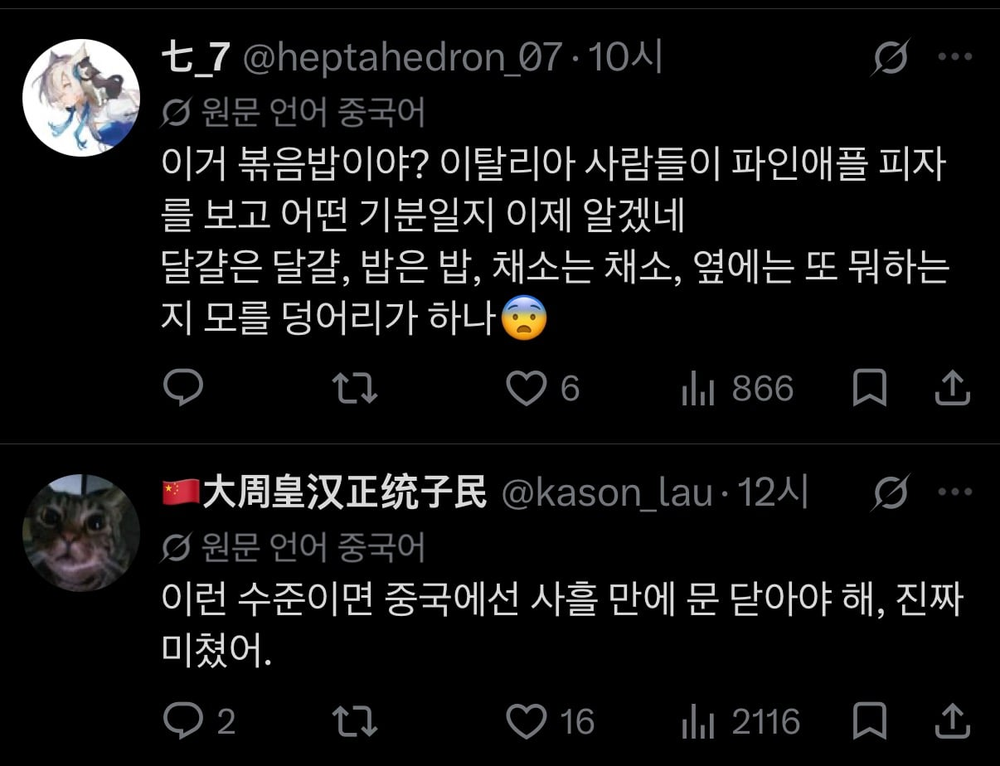
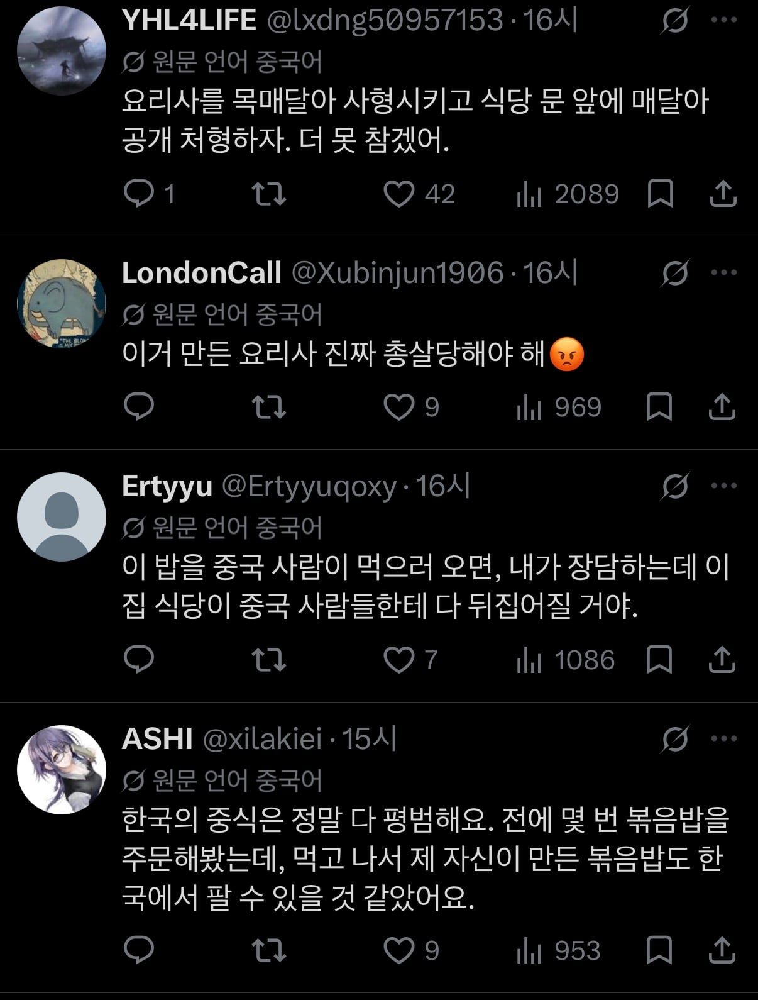
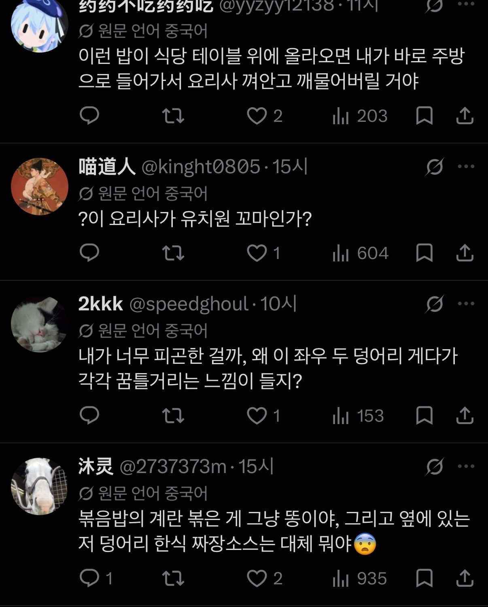
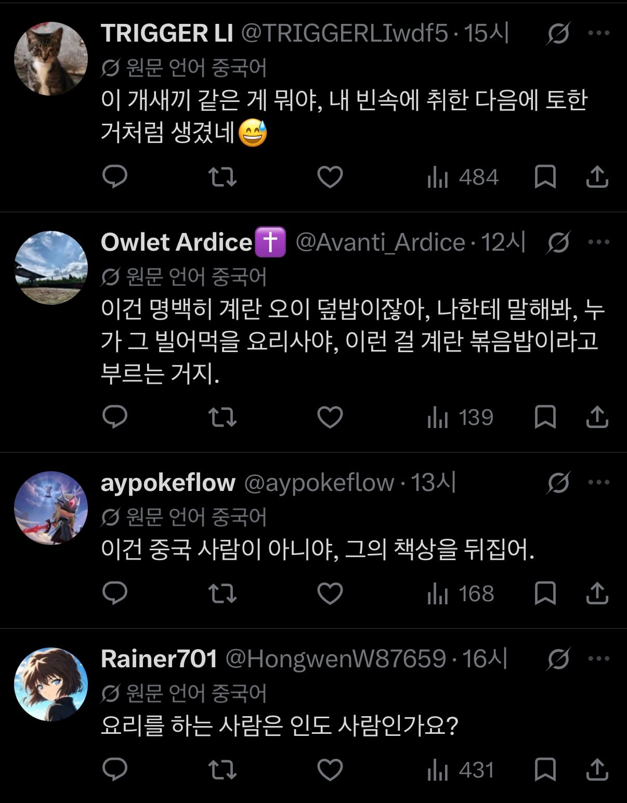

이건.... 욕할만도...







이건.... 욕할만도...
저건 ㄹㅇ 수준미달이 맞음
우리도 생배추에 고추가루 톡톡 쳐서 나오면 개쌍욕 하니까 뭐
이번만큼은 중국인에 동의함
사람같지도 않은것들이 어딜 평가를해
눈치없는 중혐개붕이 나왔노
그럼 니나 많이 저딴 볶음밥에 만족하며 살아 누렁이새꺄
혹시...
니 애비가 볶음밥 저렇게 만들어서 팔라고 가르쳤나보네
남들 욕박는다고 이틈에 패드립박는새끼도 비정상은맞음 ㅇㅇ
여기 그런 애미애비 없는 병신 한트럭임
첫 중국인 댓글에 말하는 신주(新州)는 '중원' 을 표현하는 또다른 표현인데, 좀 옛 말투임.=. 우리말로 치면 삼한땅 같은 느낌. 야랑(夜郞)은 한나라시대때 있었던 남만국중 하나로 보통 야랑자대(夜郞自大)라고 하는 사자성어로 같이 쓰임. 뜻은 보잘것없는 우물안 개구리가 지잘난 맛으로 뽐내다 같은 뜻. 문언문(文言文)은 현대 표준중국어가 아니라 옛 한문투 서면어 형식을 말하는거. 첫댓 중국인은 교양수준이 꽤 높은듯.
걍 딱봐도 교양높아보임. 뭔가 있어보이는 한자어 쓰잖아. Ai도 괄호까지 처가면서 원어 살려주노
와 어려운 문장은 한자까지 추가해서 번역해줘? 개쩌네 ㅋㅋㅋ
저거 보고 오랑캐들 볶음밥이라고 처먹는 수준이 그렇지 뭐, 하는 건 이해 된다 ㅋㅋㅋㅋㅋㅋㅋㅋㅋㅋ
요리사를 목매달아 처형ㅋㅋㅋ
요즘 밥알에 계란코팅하는 볶음밥 나오는 곳이 있나
중식 먹을 땐 간짜장이나 잘하면 다행이지 하고 기대 안하는데
나도 그 황금볶음밥 먹어보고싶음 우리나라는 없는거 같아
간혹 있더라
양꼬치집으로 ㄱ
마라탕 집가면 저렇게 해줌
짜장소스 이젠 다르게 읽히네 ㅅㅂㅋㅋㅋㅋㅋㅋㅋㅋ
새끼...기열

이제 집에서 만들어도 앵간한 중국집보다 맛있어서
이름없는 중국집 기본볶음밥은 안시킴
우리도 저런건 볶음밥 취급 안합니다 대협들
첫번째 댓글단애 얼마나 빡쳤으면 문언문으로ㅋㅋㅋ
중국집보다 마라탕, 양꼬치집 볶음밥이 더 맛있음
요즘 마라탕,양꼬치집 가야지 진짜 볶음밥 나옴
시발 줘도안먹는 기름밥에 묽은 짜장소스... 살다 중국에 미안해진건 처음이네
기름떡밥
나라에 늙은이들이 많아지니 노인들 소화 못하는 짜장면, 볶음밥은 맛없어지고 반대로 짬뽕은 맛있어짐
오떻게 저렇게만들지